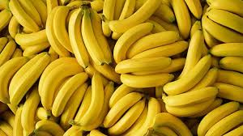

BANANAS
Introduction

A banana is an elongated, edible fruit – botanically a berry[1] – produced by several kinds of large herbaceous flowering plants in the genus Musa. In some countries, cooking bananas are called plantains, distinguishing them from dessert bananas. The fruit is variable in size, color, and firmness, but is usually elongated and curved, with soft flesh rich in starch covered with a rind, which may have a variety of colors when ripe. The fruits grow upward in clusters near the top of the plant. Almost all modern edible seedless (parthenocarp) bananas come from two wild species – Musa acuminata and Musa balbisiana. Most cultivated bananas are M. acuminata, M. balbisiana, or hybrids of the two.
Musa species are native to tropical Indomalaya and Australia; they were probably domesticated in New Guinea. They are grown in 135 countries, primarily for their fruit, and to a lesser extent to make banana paper and textiles, while some are grown as ornamental plants. The world's largest producers of bananas in 2022 were India and China, which together accounted for approximately 26% of total production. Bananas are eaten raw or cooked in recipes varying from curries to banana chips, fritters, fruit preserves, or simply baked or steamed.
Worldwide, there is no sharp distinction between dessert "bananas" and cooking "plantains": this works well enough in the Americas and Europe, but it breaks down in Southeast Asia where many more kinds of bananas are grown and eaten. The term "banana" is applied also to other members of the genus Musa, such as the scarlet banana (Musa coccinea), the pink banana (Musa velutina), and the Fe'i bananas. Members of the genus Ensete, such as the snow banana (Ensete glaucum) and the economically important false banana (Ensete ventricosum) of Africa are sometimes included. Both genera are in the banana family, Musaceae.
Banana plantations are subject to damage by parasitic nematodes and insect pests, and to fungal and bacterial diseases, one of the most serious being Panama disease which is caused by a Fusarium fungus. This and black sigatoka threaten the production of Cavendish bananas, the main variety eaten in the Western world. Plant breeders are seeking new varieties, but these are difficult to breed given that commercial varieties are seedless. To enable future breeding, banana germplasm is conserved in multiple gene banks around the world.
Fertilizing
Fertilizing bananas involves providing the right nutrients to support their growth and fruit production. Here are some general guidelines for fertilizing bananas:
- Nitrogen (N): Bananas require a good amount of nitrogen for leaf and stem growth. Apply nitrogen-rich fertilizers regularly, especially during the growing season.
- Phosphorus (P): Phosphorus is essential for root development and fruit formation. Use a fertilizer with a balanced N-P-K ratio, with a slightly higher phosphorus content during flowering and fruiting stages.
- Potassium (K): Potassium is crucial for overall plant health, fruit quality, and resistance to diseases. Bananas typically need more potassium than nitrogen and phosphorus. A potassium-rich fertilizer can be applied throughout the growing season.
- Micronutrients: In addition to the major nutrients (N-P-K), bananas also benefit from micronutrients like magnesium, calcium, iron, zinc, and manganese. Use a balanced fertilizer that includes these micronutrients, or supplement separately if deficiencies are observed.
- Timing: Fertilize bananas regularly throughout the growing season, starting when the plants are actively growing. Avoid over-fertilizing, as it can lead to nutrient imbalances and environmental issues.
- Application: Apply fertilizers evenly around the base of the banana plants, taking care not to directly contact the stems or leaves. Water the plants after fertilizing to help nutrients reach the roots.
- Organic Options: Organic fertilizers such as compost, manure, or fish emulsion can also be used to feed bananas. These can improve soil health and provide a slow-release source of nutrients.
Would you like more specific details about fertilizing bananas, such as recommended fertilizer types or application rates?
Soil and Nutritions

For bananas, soil and nutrition play crucial roles in their growth and fruit production. Here's what you need to know about soil requirements and nutritional needs for bananas:
Soil Requirements:
-
Well-Drained Soil: Bananas prefer well-draining soil to prevent waterlogging, which can lead to root rot. Sandy loam or loamy soils are ideal.
- pH Level: The optimal soil pH for bananas is between 5.5 and 6.5. Soil pH outside this range can affect nutrient availability.
- Organic Matter: Incorporating organic matter like compost or well-rotted manure improves soil structure, moisture retention, and nutrient availability.
Nutrition Requirements:
- Nitrogen (N): Essential for leaf and stem growth, nitrogen promotes healthy foliage. Apply nitrogen-rich fertilizers regularly during the growing season.
- Phosphorus (P): Important for root development and fruiting, phosphorus supports flower and fruit production. Use a balanced fertilizer with adequate phosphorus content.
- Potassium (K): Critical for fruit quality, potassium helps in sugar production and disease resistance. Bananas require a good supply of potassium, especially during fruiting.
- Calcium (Ca): Necessary for cell wall formation and preventing disorders like tip burn, ensure an adequate supply of calcium through soil amendments or foliar sprays.
- Magnesium (Mg): Essential for chlorophyll synthesis and overall plant health, magnesium deficiency can cause yellowing of leaves. Use fertilizers containing magnesium or apply magnesium sulfate as needed.
- Micronutrients: Include micronutrients like iron, zinc, manganese, and boron in the fertilizer regimen to address potential deficiencies and promote balanced growth.
- Fertilizer Application: Apply fertilizers evenly around the base of banana plants, avoiding direct contact with stems. Water the plants after fertilizing to help nutrients penetrate the soil.
- Mulching:Mulching with organic materials helps retain soil moisture, regulates soil temperature, and provides slow-release nutrients as the mulch decomposes.
By ensuring the right soil conditions and providing balanced nutrition, you can support healthy banana plants with robust growth and abundant fruiting. Would you like more specific information or tips on any of these aspects?
How to plant Bananas
To plant bananas successfully, follow these steps:
- Choose the Right Variety: Select a banana variety that suits your climate and growing conditions. Common types include dessert bananas (e.g., Cavendish) and cooking bananas (e.g., plantains).
- ite Selection: Pick a site with full sun exposure and protection from strong winds. Ensure the soil is well-draining and rich in organic matter.
- Prepare the Soil: Work the soil to a depth of about 12-18 inches (30-45 cm) and incorporate organic matter such as compost or well-rotted manure to improve soil fertility and structure.
- Planting Process:
- Rhizome Selection: Obtain healthy banana rhizomes from a reputable nursery or source.
- Planting Depth: Dig a hole large enough to accommodate the rhizome's roots. Plant the rhizome horizontally with the growing point facing upward and the roots spread out.
- Spacing: Space banana plants about 6-10 feet (1.8-3 meters) apart, depending on the variety and growth habits.
- Backfilling: Fill the hole with soil, pressing gently to eliminate air pockets around the roots.
- Watering: Water the newly planted banana thoroughly to settle the soil and provide initial moisture.
- Mulching: Apply a layer of organic mulch around the base of the banana plant to conserve moisture, suppress weeds, and provide nutrients as the mulch breaks down.
- Support: In windy areas or for tall varieties, consider providing support for the banana plants to prevent them from toppling over. Stakes or trellises can be used for support.
- Watering and Maintenance:
- Watering: Keep the soil consistently moist but not waterlogged. Bananas require regular watering, especially during dry periods.
- Fertilization: Apply a balanced fertilizer regularly according to the plant's growth stage and nutritional needs.
- Pruning: Remove old, damaged, or diseased leaves as needed to maintain plant health and aesthetics.
- Pest and Disease Control: Monitor for pests like aphids, spider mites, and nematodes, and treat as necessary. Manage diseases such as Fusarium wilt through proper sanitation and cultural practices.
- Harvesting: Depending on the variety, bananas can take several months to mature. Harvest when the fruits are fully developed and have reached the desired ripeness.
By following these steps and providing proper care, you can successfully plant and grow bananas in your garden or orchard.
Fertilizing
Fertilizing bananas is essential for their optimal growth and fruit production. Here are some guidelines for fertilizing bananas effectively:
- Nutrient Requirements: Bananas have specific nutrient needs, with a focus on nitrogen (N), phosphorus (P), potassium (K), and micronutrients like magnesium (Mg) and calcium (Ca).
- Fertilizer Types:
- Complete Fertilizers: Look for balanced fertilizers with equal or near-equal proportions of N-P-K, such as 8-8-8 or 10-10-10 formulations.
- Organic Fertilizers: Compost, well-rotted manure, and organic fertilizers enriched with micronutrients can also be beneficial for banana plants.
- Application Timing:
- Initial Fertilization: Apply a balanced fertilizer when planting bananas or shortly after. This helps provide essential nutrients for initial growth.
- Regular Fertilization: Throughout the growing season, apply fertilizer every 2-3 months or as recommended based on soil tests and plant growth.
- Fertilizer Application:
- Basal Application: Spread fertilizer evenly around the base of the banana plants, avoiding direct contact with the stems.
- Incorporation: Lightly work the fertilizer into the soil surface and water thoroughly to ensure nutrients reach the root zone.
- Nutrient Ratios and Rates: The specific nutrient requirements can vary based on soil fertility, plant age, and variety. As a general guide:
- Nitrogen (N): Apply nitrogen-rich fertilizers regularly, with higher rates during active growth periods.
- Phosphorus (P): Ensure an adequate supply of phosphorus, especially during flowering and fruiting stages.
- Potassium (K): Bananas require relatively high levels of potassium for fruit development and quality.
- Management:
- Magnesium (Mg): Monitor magnesium levels and apply magnesium-containing fertilizers or supplements if deficiencies are observed (e.g., magnesium sulfate).
- Calcium (Ca) and Boron (B): Address calcium and boron deficiencies with appropriate fertilizers or foliar sprays to prevent disorders like tip burn.
- Water Management: Proper watering is crucial to nutrient uptake and plant health. Ensure consistent soil moisture without waterlogging, especially during hot and dry periods.
- Soil Testing: Periodic soil testing helps assess nutrient levels and guide fertilization practices, preventing over or under-application of nutrients.
By following these fertilization guidelines and adjusting based on soil and plant needs, you can support healthy banana growth, flowering, and fruiting. Would you like more specific details on any aspect of fertilizing bananas?